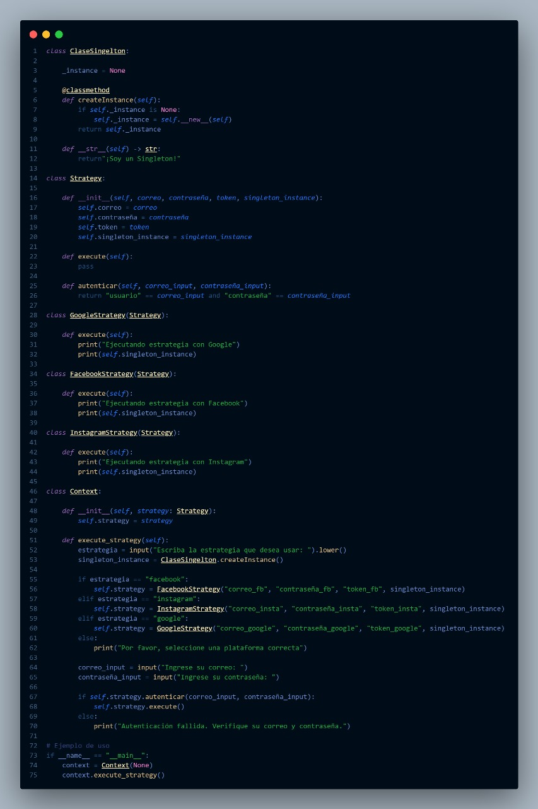
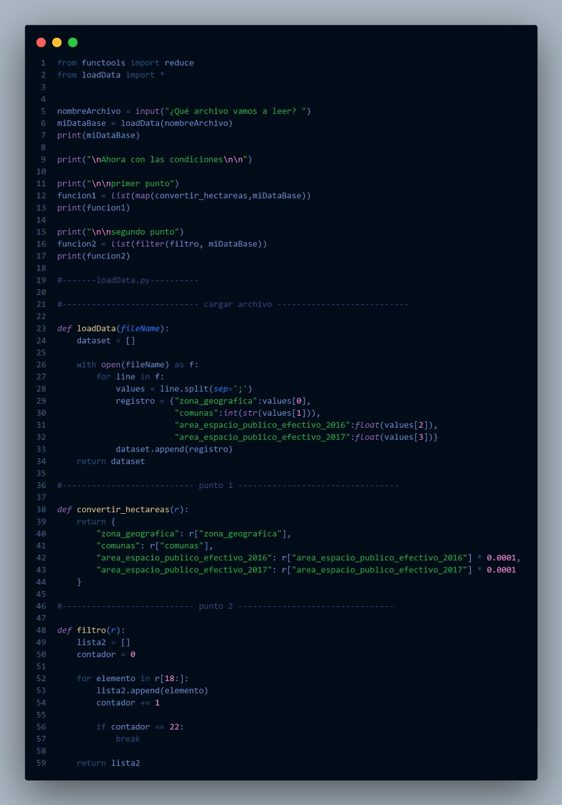

Hola! Soy Joan Aguirre, estudiante de ingenieria de sistemas en septimo semestre,
tengo 20 años, soy un loco apasionado por los carros y las notos, me gustan las series y
peliculas
Corte 1

Durante el primer corte de la materia de Lenguajes de Programación,
nos sumergimos en la introducción a la programación funcional utilizando
Python como herramienta principal. A lo largo de este periodo, participamos
en diversas actividades diseñadas para poner a prueba y demostrar los conocimientos
adquiridos. Estas actividades no solo consolidaron nuestra comprensión de los fundamentos
de la programación funcional, sino que también proporcionaron una oportunidad práctica para
aplicar los conceptos aprendidos durante el curso.
La programación funcional es un paradigma de programación que trata de tratar la computación
como la evaluación de funciones matemáticas y evitar el cambio de estado mutable y los datos.
Python, aunque no es un lenguaje puramente funcional, admite elementos de programación
funcional y se puede utilizar para escribir código en este estilo.
Corte 2
En el segundo corte de la materia de Lenguajes de Programación, nos enfocamos en el
paradigma de programación orientada a objetos (OOP) con Python, centrándonos también
en la implementación de patrones de diseño. A lo largo de este periodo, participamos
activamente en diversas actividades destinadas a aplicar y demostrar los conocimientos
adquiridos en relación con la OOP y los patrones de diseño específicos de Python.
Estas actividades no solo nos permitieron explorar en profundidad los principios y
conceptos fundamentales de la programación orientada a objetos, sino que también nos
desafiaron a aplicar de manera práctica los patrones de diseño para resolver problemas
concretos.
La programación orientada a objetos (OOP) es un paradigma de programación que se basa en
la organización del código alrededor de "objetos", que son instancias de clases.
Cada objeto puede contener datos, en forma de atributos, y código, en forma de métodos.
Python es un lenguaje que admite la programación orientada a objetos y proporciona
herramientas para crear y manipular objetos de manera eficiente.En Python, las clases son
el componente fundamental de la programación orientada a objetos. Una clase es una plantilla
o un "molde" para crear objetos. Un objeto, por otro lado, es una instancia específica de una
clase, con atributos que pueden ser variables o incluso otras instancias de clases, y métodos
que son funciones asociadas al objeto.
Corte 3

En el tercer corte de la materia de Lenguajes de Programación, nos sumergimos en el
fascinante mundo de la programación multihilo con Java. A lo largo de este periodo,
participamos activamente en diversas actividades diseñadas para aplicar y demostrar
los conocimientos adquiridos en relación con la programación multihilo. Exploramos
conceptos clave como la concurrencia y la sincronización, y nos enfrentamos a desafíos
prácticos que requerían el uso eficiente de múltiples hilos en Java para resolver
problemas específicos. Estas actividades no solo ampliaron nuestra comprensión de
la programación concurrente, sino que también nos proporcionaron valiosas habilidades
para abordar situaciones del mundo real que requieren un enfoque multihilo en el
desarrollo de software.
La programación multihilo es especialmente útil para mejorar el rendimiento en sistemas
con múltiples núcleos de CPU, ya que permite que varias tareas se ejecuten simultáneamente,
aprovechando al máximo los recursos del sistema. Sin embargo, también introduce desafíos como
la sincronización y la gestión de recursos compartidos entre hilos, que deben abordarse
cuidadosamente para evitar problemas como condiciones de carrera y bloqueos.